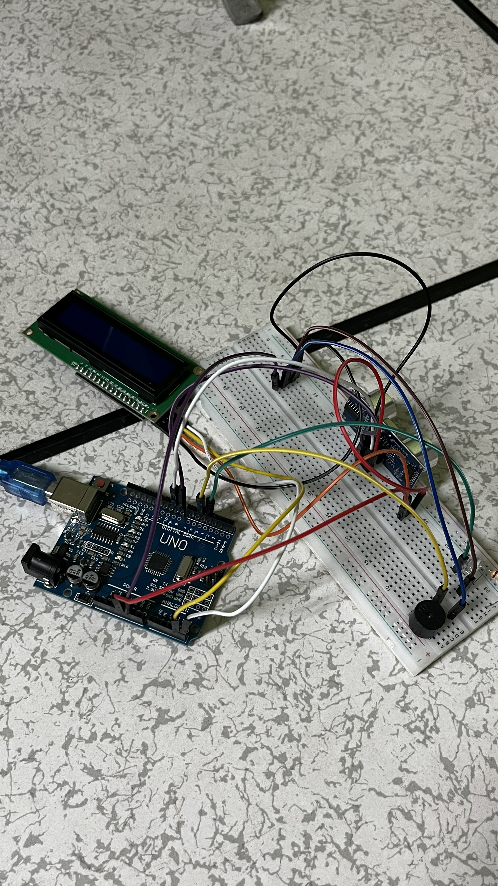
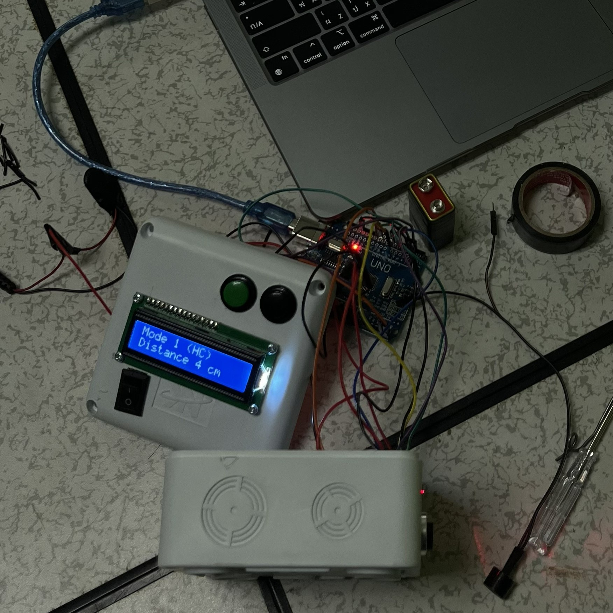
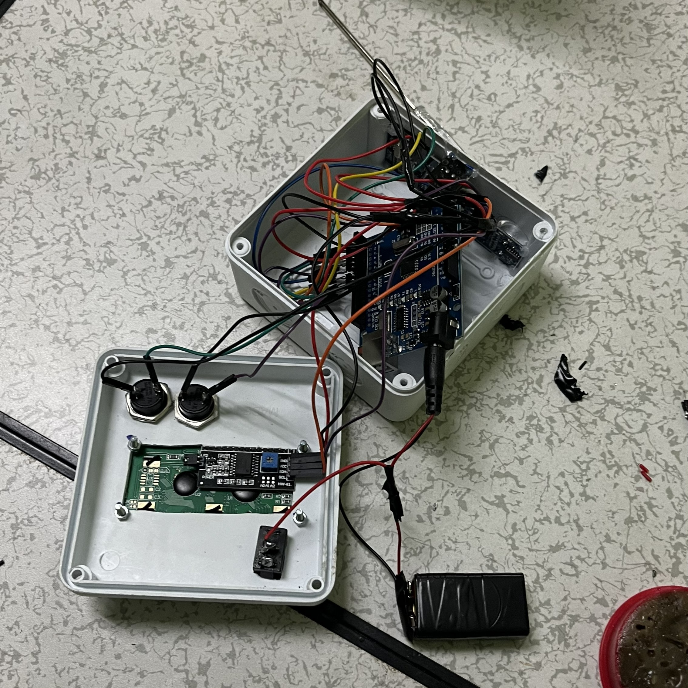
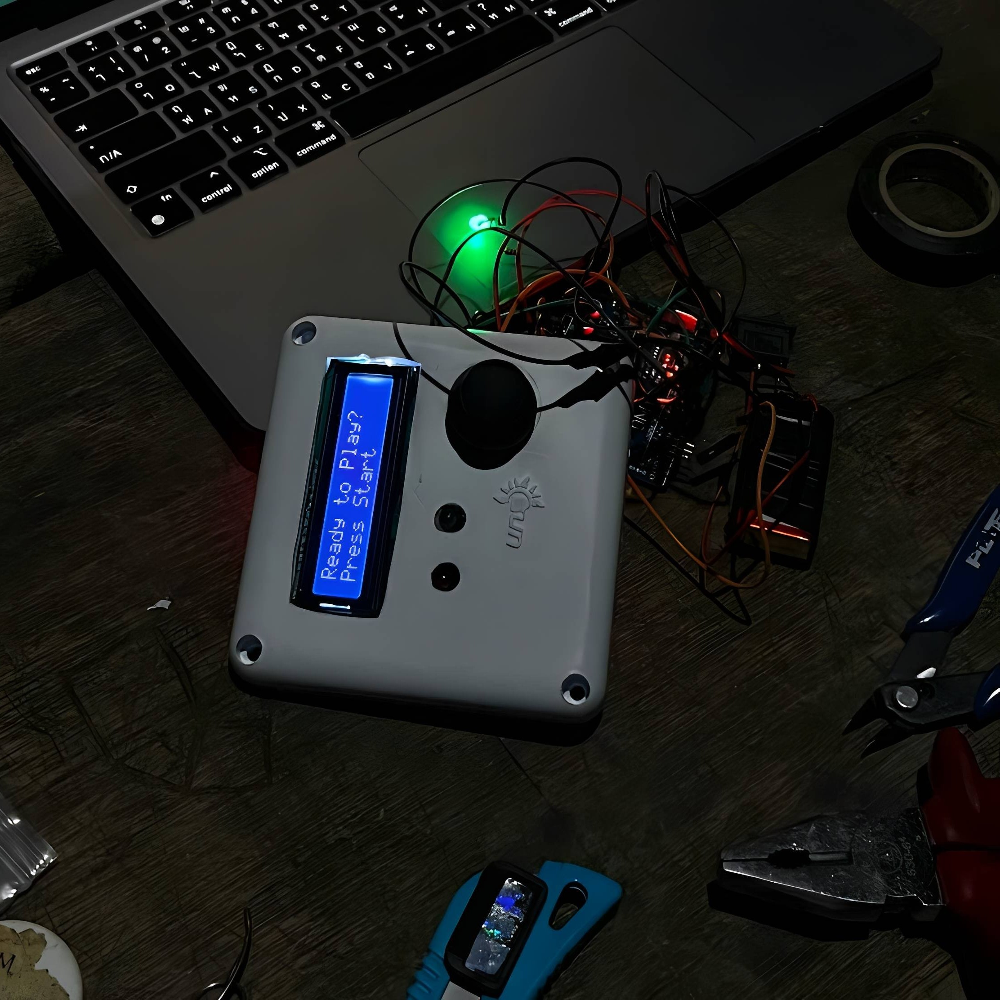
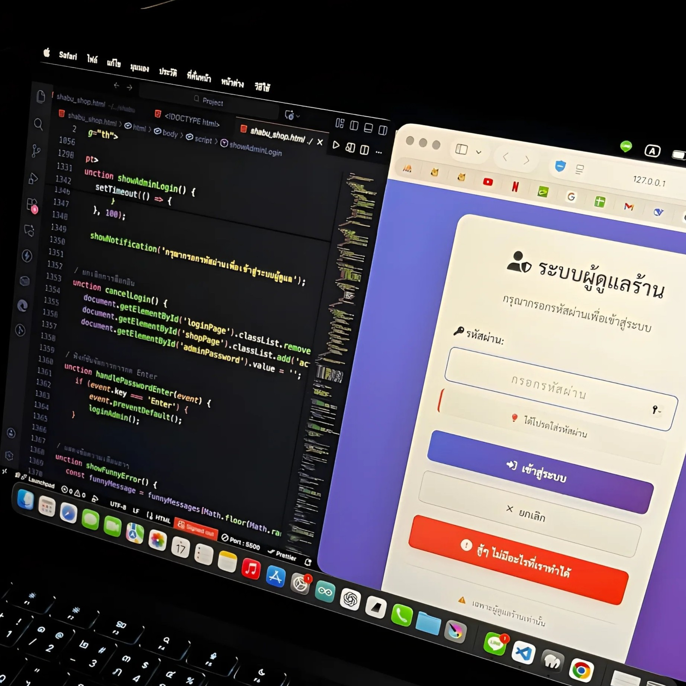
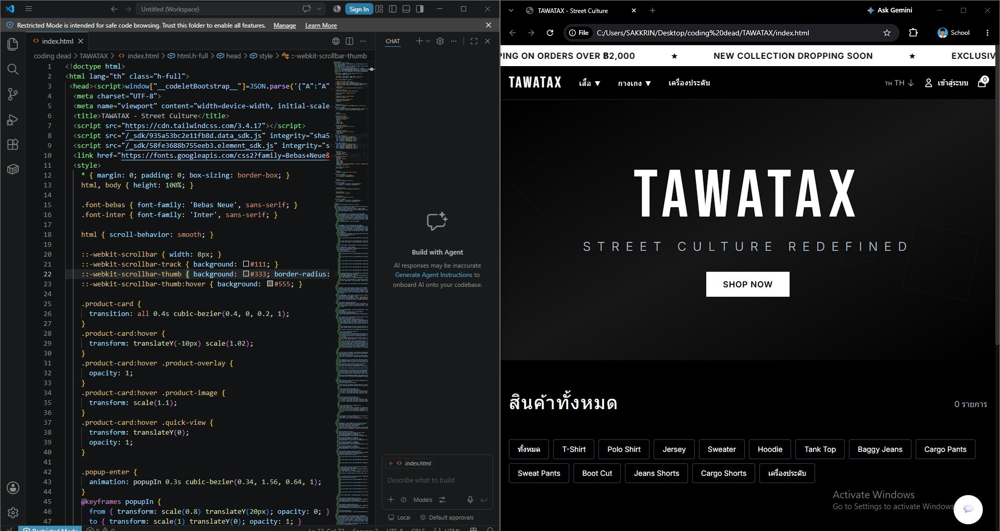

About Me
นักศึกษาสาขา เทคโนโลยีดิจิทัล (Digital Technology) ที่มีพื้นฐานด้าน Electronics, IT Support และ IoT Systems พร้อมประสบการณ์ด้าน Hardware & Software Troubleshooting, System Configuration, PCB Inspection และ Preventive Maintenance จากการทำงานจริง รวมถึงผ่านการปฏิบัติหน้าที่ Compulsory Military Service ซึ่งช่วยพัฒนาความมีวินัย ความรับผิดชอบ และการทำงานเป็นทีม มีความสนใจในสาย Manufacturing, Automation และ Electronics Engineering พร้อมเรียนรู้เทคโนโลยีใหม่และพัฒนาทักษะในสภาพแวดล้อมการทำงานระดับอุตสาหกรรม
Project
Wireless Distance Meter
Arduino UNO R3 • HC-SR04 • JSN-SR04Tโปรเจคนี้ถูกพัฒนาขึ้นเพื่อเป็น Smart Measuring Tool สำหรับการวัดระยะแบบไร้สาย (Wireless Distance Measurement) โดยใช้เซนเซอร์ Ultrasonic ร่วมกับระบบ Multi-Mode Measurement และ Laser Assisted Targeting เพื่อช่วยให้การวัดระยะมีความสะดวก รวดเร็ว และแม่นยำมากขึ้น.



Website and Other projects
โปรเจคอื่นๆที่ทำไว้เเต่ยังเป็น Demo มีแพลนจะทำ Web Application และ Smart IoT ในขั้นตอนต่อไปครับ



Technical Skills
Contact
Feel free to contact me through any platform below.